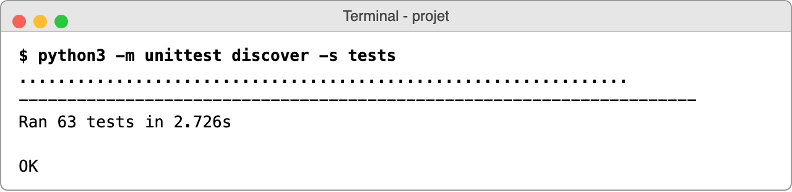
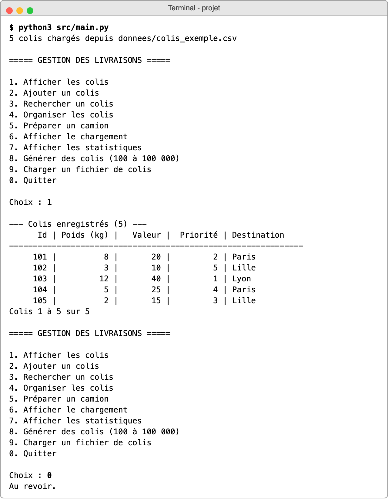
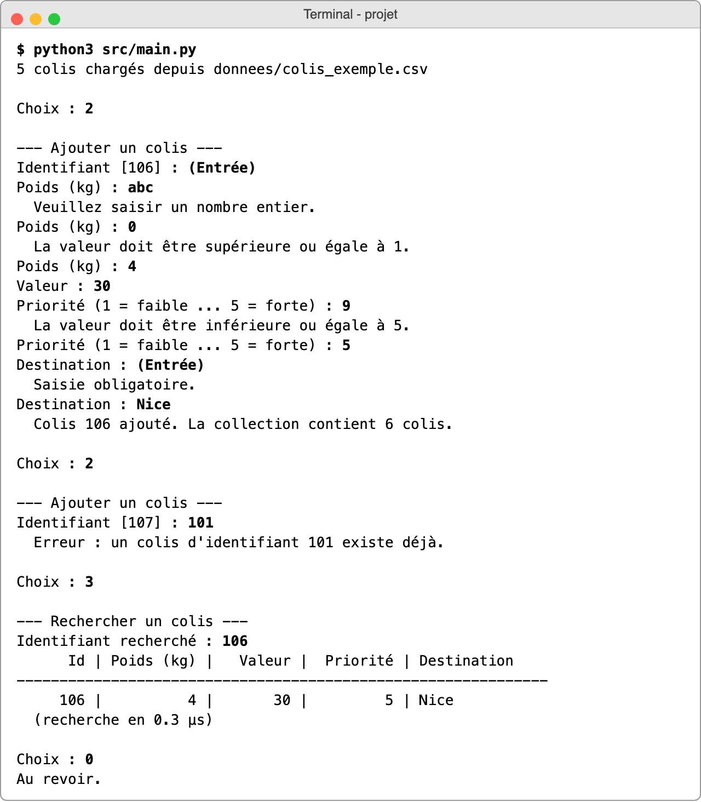
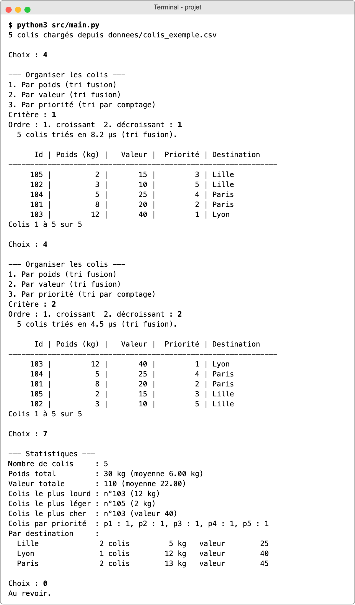
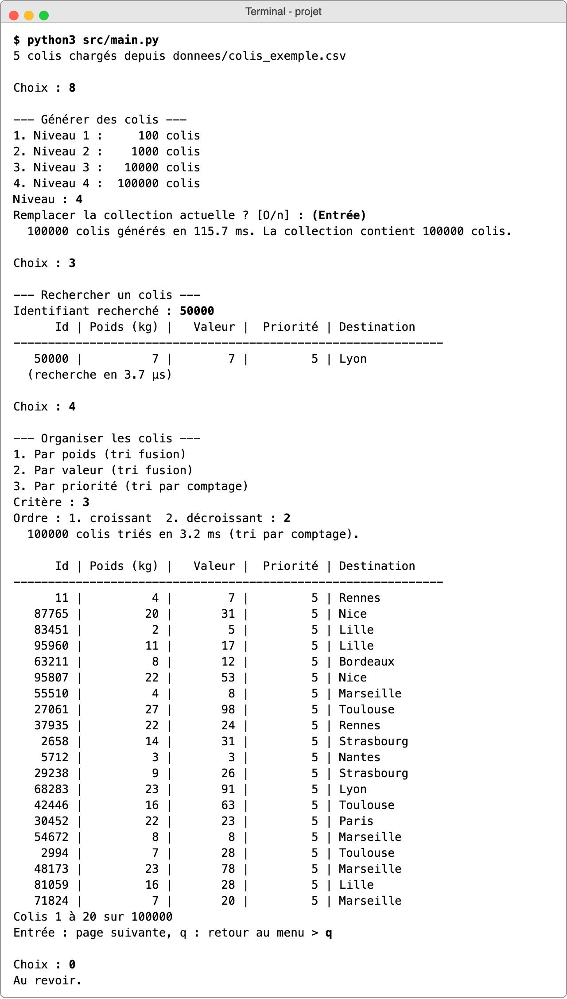
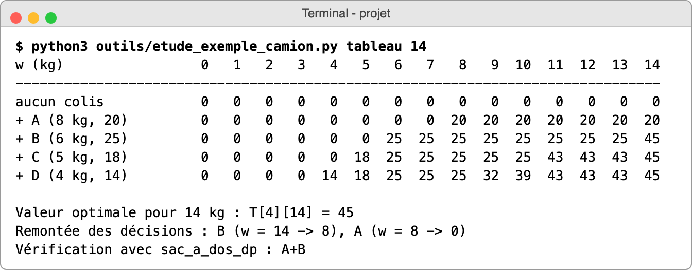
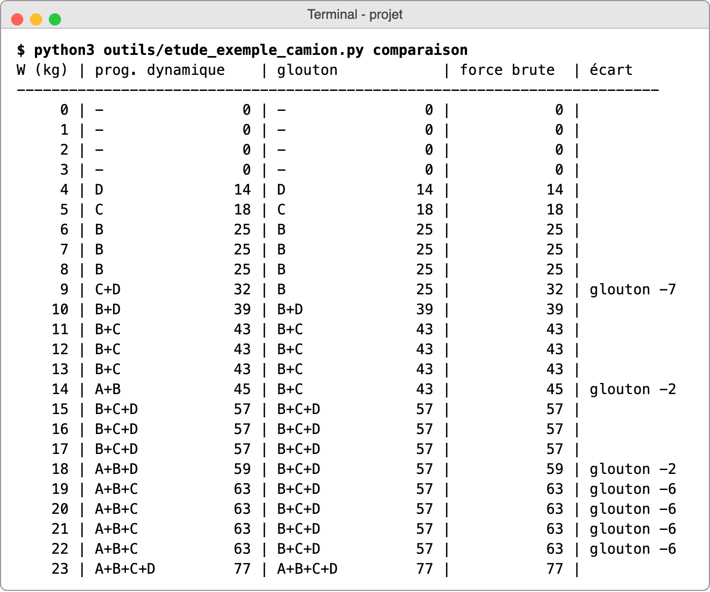
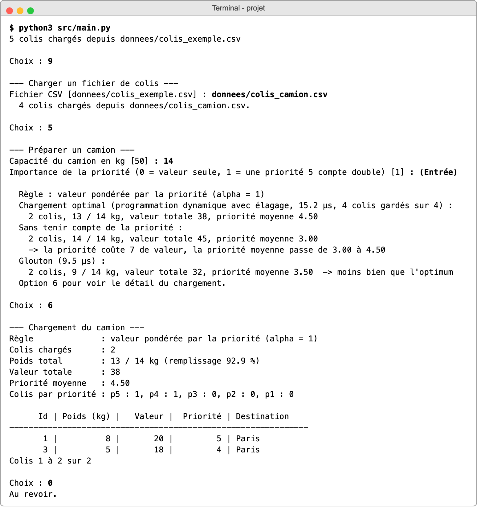
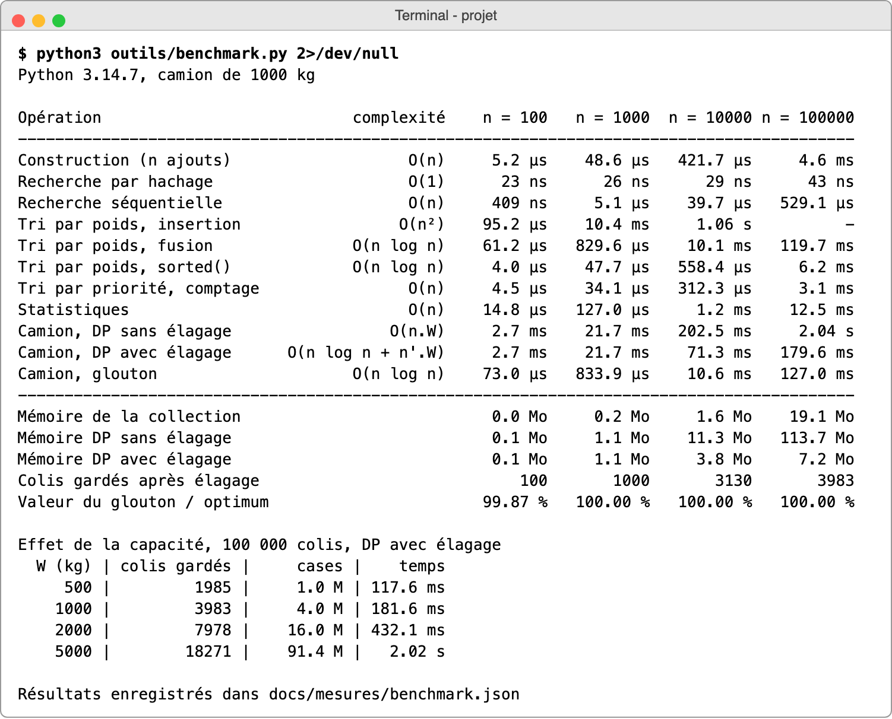

| Auteur : | Bilal BOUKHORISSA |
| Langage : | Python 3 |
| Date : | Octobre 2026 |
| Dépôt GitHub : | https://github.com/BilalBSK/gestion-colis |
Le sujet demande un programme pour une entreprise de livraison : gérer la liste des colis (ajouter, afficher, rechercher, trier) et préparer le chargement d'un camion, c'est-à-dire choisir quels colis emporter sans dépasser la capacité, en gardant le plus de valeur possible. Ensuite, il faut aussi tenir compte de la priorité des colis. Tout ça doit marcher jusqu'à 100 000 colis.
J'ai fait le projet en Python. Je l'ai choisi surtout parce que le code reste lisible, assez proche
du pseudo-code, et que je voulais passer mon temps sur les algorithmes plutôt que sur la gestion de la mémoire
qu'il aurait fallu faire en C. La bibliothèque standard m'a suffi pour le reste (unittest pour les
tests, time et tracemalloc pour les mesures, csv pour lire les fichiers),
et je n'ai installé aucune bibliothèque externe. Par contre, une boucle Python est beaucoup plus lente qu'en C.
Les complexités restent les mêmes, mais ça se voit sur les temps mesurés, j'en reparle dans la partie 7.
Comme le sujet le demande, j'ai écrit moi-même les algorithmes principaux (les tris et le chargement du camion). Pour le dictionnaire, que j'utilise tel quel, j'explique comment il marche et ce qu'il coûte (partie 3.2).
J'ai fixé deux conventions pour tout le projet :
projet/ ├── src/ le programme (point d'entrée : main.py) ├── tests/ les tests unitaires ├── donnees/ les colis d'exemple du sujet ├── outils/ mes scripts de mesure, de capture d'écran et de génération du PDF ├── docs/ la source de ce rapport, les captures et les mesures ├── README.md └── rapport.pdf
| Fichier | Contenu |
|---|---|
colis.py | la classe Colis et la vérification des données |
gestion.py | la collection de colis : ajout, recherche, tris, statistiques |
tris.py | le tri fusion et le tri par comptage |
chargement.py | la préparation du camion (programmation dynamique, glouton, force brute) |
generateur.py | la génération de 100 à 100 000 colis aléatoires |
main.py, saisie.py, affichage.py, stockage.py | le menu, les saisies au clavier, l'affichage en tableau et la lecture des fichiers CSV |
Pour lancer le programme : python3 src/main.py depuis le dossier du projet. J'ai avancé étape
par étape (modèle de données, collection, tris, menu, passage à l'échelle, camion, priorité, performances).
À chaque fois, j'ai écrit les tests de l'étape avant de passer à la suivante, puis j'ai fait un commit, donc
l'historique sur GitHub suit ces étapes.
Il y a 63 tests en tout (python3 -m unittest discover -s tests). Ceux qui m'ont le plus servi
comparent le chargement du programme avec la force brute sur 500 cas tirés au hasard, ou lancent le vrai menu
avec des saisies (dont des saisies fausses) pour vérifier qu'il ne plante pas.

Chaque colis est un objet Colis avec ses cinq informations (identifiant, poids, valeur,
priorité, destination). Je vérifie les données dès la création : un poids nul, une valeur négative, une
priorité qui n'est pas entre 1 et 5 ou une destination vide sont refusés. Comme ça, un colis incohérent ne
peut pas entrer dans le programme, et je n'ai pas besoin de refaire les vérifications dans les algorithmes.
J'ai utilisé une dataclass avec deux options. Avec frozen=True, on ne peut plus
modifier un colis après sa création. Je l'ai mis parce que l'identifiant sert de clé pour retrouver le colis :
s'il changeait en cours de route, le colis serait perdu dans le dictionnaire. slots=True empêche
Python de créer un dictionnaire caché pour chaque objet, ce qui fait gagner pas mal de mémoire avec
100 000 colis.
Presque toutes les opérations dépendent de la façon dont je range la collection, donc j'ai commencé par comparer les possibilités :
| Structure | Ajout (avec contrôle des doublons) | Recherche par identifiant | Remarque |
|---|---|---|---|
| Liste | O(n), il faut parcourir pour vérifier le doublon | O(n) | la plus simple |
| Liste triée par identifiant | O(n), il faut décaler les éléments | O(log n) par dichotomie | garde l'ordre des identifiants |
| Arbre équilibré | O(log n) | O(log n) | plus compliqué à écrire |
| Dictionnaire (retenu) | O(1) en moyenne | O(1) en moyenne | garde l'ordre d'ajout |
Un dictionnaire Python est une table de hachage. À partir de l'identifiant, Python calcule un nombre (le « haché ») qui donne directement la case où ranger le colis. Pour le retrouver, il refait le même calcul et va à la bonne case, sans regarder les autres colis. Si deux identifiants tombent sur la même case, il en essaie une autre, mais tant que la table n'est pas trop pleine, ça arrive peu. Quand elle est remplie aux deux tiers, Python la recopie dans une table plus grande. Cette recopie coûte O(n), mais comme elle est rare, un ajout reste en moyenne en temps constant (« O(1) amorti »). En plus, depuis Python 3.7, un dictionnaire garde l'ordre d'insertion, donc je n'ai pas eu besoin d'une liste à côté pour l'affichage.
Dans les tableaux suivants, n est le nombre de colis.
| Problème | Ajouter un colis sans jamais avoir deux colis avec le même identifiant. |
| Algorithme | Je regarde si l'identifiant est déjà une clé du dictionnaire. Si oui, je refuse l'ajout ; sinon, je range le colis et je mets à jour le plus grand identifiant connu, ce qui permet au menu de proposer directement un identifiant libre. |
| Temps | O(1) amorti par ajout, donc O(n) pour charger n colis. |
| Espace | O(n) pour la collection. |
| Alternative | Une liste, avec un parcours pour vérifier les doublons : O(n) par ajout, soit O(n²) pour charger n colis. |
| Justification | J'ai écarté la liste parce que charger 100 000 colis demanderait environ 5 milliards de comparaisons rien que pour vérifier les doublons. Avec le dictionnaire, ça prend 4,6 ms (partie 7). |
| Problème | Afficher les colis de façon lisible, même quand il y en a 100 000. |
| Algorithme | Je parcours les colis dans l'ordre d'ajout et je les affiche par pages de 20. Seuls les colis de la page sont mis en forme. |
| Temps | O(n) pour tout afficher, mais une page coûte toujours le même temps, quel que soit n. |
| Espace | O(n) pour la copie de la liste des colis. |
| Alternative | Tout afficher d'un coup. |
| Justification | 100 000 lignes, ça ferait 5 000 écrans à faire défiler, personne ne lirait ça. Avec les pages, on voit tout de suite le début, et on continue si on veut. |
| Problème | Retrouver un colis à partir de son identifiant, ou dire qu'il n'existe pas. |
| Algorithme | Accès direct dans le dictionnaire. |
| Temps | O(1) en moyenne (O(n) dans le pire cas théorique, si tous les identifiants tombaient dans la même case, ce qui n'arrive pas avec des entiers). |
| Espace | Rien en plus. |
| Alternative | Parcourir tous les colis (O(n)), ou une dichotomie dans une liste triée (O(log n), mais il faut garder la liste triée à chaque ajout, en O(n)). |
| Justification | Le sujet précise que l'entreprise recherche souvent des colis, donc c'est l'opération que je voulais la plus rapide. Avec 100 000 colis, une recherche prend 43 ns, contre 529 µs en parcourant tous les colis (partie 7). |
Le tri fusion coupe la liste en deux, trie chaque moitié de la même façon, puis fusionne les deux moitiés triées. Pour fusionner, je compare les deux premiers éléments, je prends le plus petit, et je recommence jusqu'à ce qu'une des deux listes soit vide :
fusion de [3, 8] et [2, 5, 12] : 3 ou 2 -> 2 [2] 3 ou 5 -> 3 [2, 3] 8 ou 5 -> 5 [2, 3, 5] 8 ou 12 -> 8 [2, 3, 5, 8] il reste 12 [2, 3, 5, 8, 12]
Il y a log2(n) niveaux de découpage, et à chaque niveau on fusionne les n éléments une fois, ce qui donne O(n log n). En cas d'égalité, je prends l'élément de gauche, donc le tri est stable : deux colis de même poids restent dans leur ordre d'ajout. C'est plus pratique à l'affichage, l'ordre ne change pas d'une fois sur l'autre.
| Problème | Classer les colis par poids ou par valeur. Ces grandeurs n'ont pas de limite connue à l'avance. |
| Algorithme | Tri fusion écrit à la main. Il renvoie une nouvelle liste, sans modifier la collection. |
| Temps | O(n log n) dans tous les cas, même si les colis sont déjà dans un ordre défavorable. |
| Espace | O(n) : deux tampons créés une seule fois, plus la pile des appels récursifs (O(log n)). |
| Alternatives | Le tri par insertion est simple mais en O(n²) : je l'ai mesuré, il met déjà 1 s pour 10 000 colis. Le tri rapide est en O(n log n) en moyenne mais O(n²) dans le pire cas, et il n'est pas stable. La fonction native sorted() utilise Timsort, une variante du tri fusion écrite en C. |
| Justification | Sa complexité est garantie et il est stable. sorted() va environ 19 fois plus vite parce qu'il est écrit en C, mais sa complexité est la même. Comme le sujet demande de savoir expliquer l'algorithme, j'ai préféré écrire le mien, et sorted() me sert dans les tests pour vérifier que j'obtiens le même résultat. |
La priorité n'a que 5 valeurs possibles, donc on peut trier sans comparer les colis entre eux. Je prépare un « seau » par priorité, je mets chaque colis dans le sien, puis je vide les seaux dans l'ordre.
| Problème | Classer les colis par priorité, un entier de 1 à 5. |
| Algorithme | Tri par comptage avec 5 seaux. Il est stable lui aussi. |
| Temps | O(n + k) avec k = 5, donc O(n). |
| Espace | O(n + k). |
| Alternative | Le tri fusion, en O(n log n). |
| Justification | Je profite du fait que la priorité est bornée. Un tri qui compare les éléments ne peut pas faire moins de n log n comparaisons, alors qu'ici la priorité donne directement le seau, sans comparaison. Sur 100 000 colis, il va environ 40 fois plus vite que le tri fusion (3,1 ms contre 120 ms). Par contre, ça ne marche pas pour le poids ou la valeur, qui n'ont pas de borne fixée. |
Les statistiques (option 7) sont calculées en un seul parcours de la collection, donc en O(n) : les sommes, les colis extrêmes, et le nombre de colis par priorité et par destination (figure 4).
J'ai repris le menu proposé dans le sujet, et j'ai ajouté deux options pour tester plus facilement : la 8 génère de 100 à 100 000 colis, et la 9 charge un fichier de colis (par exemple les colis A, B, C, D de la partie 5). Au démarrage, les cinq colis du sujet sont déjà chargés. Toutes les saisies sont vérifiées : si la réponse n'est pas valide, la question est reposée, un identifiant déjà pris est refusé tout de suite sans demander le reste, et Ctrl-D ferme le programme sans erreur.



Pour tester les quatre tailles du sujet (100, 1 000, 10 000 et 100 000 colis), j'ai écrit un générateur de colis aléatoires. Il est reproductible : avec la même graine, on obtient les mêmes colis, ce qui permet de refaire une mesure. Les identifiants sont tous différents et mélangés, le poids va de 1 à 30 kg, et la valeur est entre 1 et 4 fois le poids.
Pour la valeur, je me suis trompé au début. Dans ma première version, j'ajoutais un petit bonus fixe à chaque valeur. En testant un camion de 1 000 kg sur 100 000 colis, j'ai vu qu'il ne chargeait que des colis de 1 kg : avec le bonus, c'étaient de loin les plus rentables au kilo, et le résultat ne voulait plus rien dire. J'ai enlevé le bonus. Maintenant, la valeur au kilo ne dépend plus du poids, et le camion prend des colis de toutes les tailles.
Les tests vérifient, pour les quatre tailles, que la recherche, les trois tris et les statistiques donnent le bon résultat. Même avec 100 000 colis, tout reste rapide (figure 5) :

En passant de 100 à 100 000 colis, j'ai surtout vu l'écart se creuser entre les bons et les mauvais algorithmes. Avec 100 colis, même le tri par insertion est instantané (0,1 ms). Avec 100 000, il lui faudrait environ 100 s, contre 0,12 s pour le tri fusion. Sur une petite liste, on ne voit pas la différence, il faut regarder comment le temps augmente avec n. C'est aussi pour ça que l'affichage se fait par pages. Toutes les mesures sont dans la partie 7.
Il faut choisir des colis dont le poids total ne dépasse pas la capacité W du camion, avec la plus grande valeur totale possible. Un colis est chargé en entier ou pas du tout : c'est le problème du sac à dos 0/1. Le sujet insiste, il ne suffit pas de trouver une combinaison qui rentre, il faut la meilleure. La difficulté, c'est qu'il y a 2n combinaisons possibles : 16 pour 4 colis, mais déjà plus d'un milliard pour 30 colis. On ne peut donc pas toutes les essayer, sauf sur de tout petits exemples.
Avec les colis du sujet (A : 8 kg et 20, B : 6 kg et 25, C : 5 kg et 18, D : 4 kg et 14) et la capacité de 50 kg de l'exemple, tout rentre (23 kg en tout), donc il n'y a rien à choisir. J'ai surtout travaillé avec des capacités plus petites, en particulier 14 kg.
Ma première idée a été de prendre d'abord les colis qui rapportent le plus par kilo. Ici, ça donne B (4,17 par kg), puis C (3,6), D (3,5) et A (2,5). Avec 14 kg, le glouton prend B puis C, et il ne reste plus assez de place pour D ou A : il obtient B + C = 43 et laisse 3 kg vides. Pourtant, A + B = 45 remplit exactement les 14 kg. Le glouton n'est donc pas optimal. Il le serait si on avait le droit de couper un colis (on compléterait avec un morceau de A), mais ce n'est pas le cas ici.
Je note T[i][w] la meilleure valeur possible avec w kg de place, en n'utilisant que les i premiers colis. Pour le colis i (poids p, valeur v), il y a seulement deux possibilités : je ne le prends pas et je garde T[i-1][w], ou je le prends et j'obtiens T[i-1][w - p] + v. Je garde la meilleure des deux :
T[0][w] = 0 T[i][w] = max( T[i-1][w] , T[i-1][w - p] + v ) si p <= w, sinon T[i-1][w] résultat : T[n][W]
Le tableau se remplit ligne par ligne. Voici celui de l'exemple avec 14 kg :

Par exemple, ligne « + B », colonne 14 : max(20, T[1][8] + 25 = 20 + 25) = 45, donc prendre B et garder 8 kg pour A vaut mieux que A seul. Pour retrouver les colis, je pars de la dernière case et je remonte. Si la valeur est la même que sur la ligne du dessus, le colis n'a pas été pris ; sinon, il a été pris et j'enlève son poids. Ici, D et C ne sont pas pris, B est pris (il reste 8 kg), puis A. On retrouve bien A + B = 45.
Dans le programme, je ne garde pas tout le tableau des valeurs. Une seule ligne suffit, à condition de la parcourir de w = W vers w = p (dans l'autre sens, un colis pourrait être compté deux fois). Pour retrouver les colis, je garde quand même, pour chaque colis, un tableau d'octets qui note s'il a été pris pour chaque capacité. Un octet par case au lieu d'un nombre Python, ça prend au moins huit fois moins de mémoire.
| Pourquoi ce choix | Le sujet demande la meilleure valeur possible. J'ai d'abord pensé au glouton, mais il peut se tromper (5.2), et la force brute est exacte mais exponentielle. J'ai donc pris la programmation dynamique : elle donne la solution exacte en un temps raisonnable, à condition que les poids soient des entiers et que la capacité ne dépasse pas quelques milliers de kilos, ce qui est le cas pour un camion. |
| Est-ce toujours optimal ? | Oui. Pour une case donnée, la meilleure solution soit ne contient pas le colis i, et elle vaut alors au plus T[i-1][w], soit elle le contient, et le reste est un chargement des colis précédents dans w - p kg, qui vaut au plus T[i-1][w - p]. La formule prend le maximum des deux, donc si la ligne d'avant est optimale, la nouvelle l'est aussi, et on conclut par récurrence. Je l'ai aussi vérifié en pratique : sur 500 cas aléatoires, le programme trouve toujours la même valeur que la force brute. |
| Complexité temporelle | O(n × W) : pour chaque colis, je passe sur les W + 1 capacités. Ça dépend de la valeur de W et pas seulement du nombre de colis : si on double la capacité, le temps double. |
| Complexité spatiale | n × (W + 1) octets pour retrouver les colis choisis, plus O(W) pour la ligne de valeurs. Si on voulait seulement la valeur, sans la liste des colis, O(W) suffirait. |
| Autres approches | Le glouton (O(n log n), mais pas optimal), la force brute (O(2n)), ou une recherche en arbre avec élagage (« séparation et évaluation »), exacte et souvent rapide, mais exponentielle dans le pire cas. On peut aussi faire la programmation dynamique sur la valeur au lieu du poids, ce qui est intéressant quand les valeurs sont petites. |
J'ai comparé les trois méthodes pour toutes les capacités de 0 à 23 kg. La programmation dynamique trouve toujours la même valeur que la force brute. Le glouton se trompe pour 7 capacités sur 24 (9, 14, 18 et de 19 à 22 kg), et perd jusqu'à 7 de valeur.

L'entreprise veut maintenant favoriser les colis importants. Avec les priorités de la partie 6.1 du sujet (A : 5, B : 1, C : 4, D : 3) et un camion de 14 kg, ma version de la partie 5 charge A + B, alors que B est justement le colis le moins prioritaire.
Je n'ai pas changé d'algorithme, j'ai changé ce qu'il maximise. Au lieu de la valeur, la programmation dynamique maximise une « utilité » :
utilité = valeur x (1 + alpha x (priorité - 1) / 4)
Le coefficient va de 1 pour une priorité 1 jusqu'à 1 + α pour une priorité 5. Avec α = 1 (la valeur par défaut), un colis de priorité 5 compte double. Avec α = 0, on retrouve exactement la partie 5. Le poids reste la contrainte à ne pas dépasser, la valeur sert de base, et la priorité vient l'augmenter.
Sur l'exemple, avec α = 1, les utilités valent A = 40, B = 25, C = 31,5 et D = 21. Voici les chargements possibles dans 14 kg :
| Chargement | Poids | Valeur | Utilité | Priorité moyenne |
|---|---|---|---|---|
| A + B | 14 kg | 45 | 65 | 3,0 |
| A + C | 13 kg | 38 | 71,5 | 4,5 |
| A + D | 12 kg | 34 | 61 | 4,0 |
| B + C | 11 kg | 43 | 56,5 | 2,5 |
| C + D | 9 kg | 32 | 52,5 | 3,5 |
| B + D | 10 kg | 39 | 46 | 2,0 |
Le programme choisit donc A + C. On perd 7 de valeur, mais la priorité moyenne passe de 3 à 4,5. C'est α qui règle ce compromis : A + B vaut 45 + 20α et A + C vaut 38 + 33,5α, donc A + C passe devant dès que α dépasse environ 0,52. L'entreprise peut donc régler elle-même combien de valeur elle accepte de perdre pour les colis prioritaires.

Pourquoi j'ai choisi cette règle. Elle prend en compte le poids, la valeur et la priorité, on la règle avec un seul nombre, et avec α = 0 on retombe sur la partie 5. J'ai préféré multiplier la valeur plutôt que lui ajouter un bonus : comme ça, un colis prioritaire mais sans valeur ne prend pas la place d'un colis utile, et entre deux colis de même priorité, c'est toujours la valeur qui décide. Et comme je garde le même algorithme, le chargement reste optimal pour cette règle, avec la même complexité O(n × W).
Et avec beaucoup de colis ? Sur 4 colis, la priorité coûte 7 de valeur sur 45, c'est beaucoup. J'ai voulu voir ce que ça donnait avec plus de choix : 10 000 colis générés (dont 1 944 de priorité 5) et un camion de 1 000 kg :
| Règle | Valeur | % du maximum | Priorité moyenne | Colis p5 | Colis p1 |
|---|---|---|---|---|---|
| α = 0 (valeur seule) | 4 000 | 100,0 % | 2,94 | 25 | 28 |
| α = 0,25 | 3 988 | 99,7 % | 4,98 | 101 | 0 |
| α = 1 | 3 987 | 99,7 % | 5,00 | 97 | 0 |
| α = 5 | 3 987 | 99,7 % | 5,00 | 97 | 0 |
Là, il y a assez de colis de priorité 5 rentables pour remplir le camion presque sans rien perdre : la priorité moyenne passe de 2,94 à 5, pour seulement 0,3 % de valeur en moins. En fait, la priorité ne coûte cher que quand il y a peu de colis à choisir, comme dans l'exemple du sujet. C'est pour ça que j'ai laissé α réglable au lieu de le fixer. Le temps de calcul ne change pas (environ 73 ms à chaque fois).
Autres règles que j'ai envisagées.
J'ai fait les mesures sur un Mac Apple M5 avec Python 3.14, avec le script outils/benchmark.py.
Pour chaque opération, je garde le meilleur temps sur plusieurs essais. Pour la recherche, c'est une moyenne sur
10 000 recherches, et le camion fait 1 000 kg.

Les deux graphiques reprennent ces temps, avec une échelle logarithmique sur les deux axes. Comme ça, une opération en O(1) donne une ligne plate, et une opération en O(n) monte d'une graduation chaque fois que n est multiplié par 10. On peut donc lire la complexité avec la pente des courbes.

| Opération | Retrouver un colis par son identifiant. |
| Complexité | O(1) en moyenne avec le dictionnaire, O(n) avec un parcours. Le dictionnaire prend O(n) en mémoire. |
| Évolution | De 100 à 100 000 colis, la recherche par hachage passe seulement de 23 à 43 ns. La petite hausse vient du cache du processeur (la table ne tient plus dedans), mais le nombre d'opérations ne change pas. Le parcours, lui, est multiplié par 10 à chaque fois et arrive à 529 µs, plus de 10 000 fois plus lent. |
| Adaptée aux grandes quantités ? | Oui, le coût d'une recherche ne dépend pas du nombre de colis. |
| Amélioration possible | Pour la recherche par identifiant, on ne peut pas vraiment faire mieux. Si on voulait chercher par destination, il faudrait un deuxième dictionnaire (destination vers liste de colis). Et si les données ne tenaient plus en mémoire, il faudrait passer à une base de données avec un index. |
| Opération | Classer les colis par poids, valeur ou priorité. |
| Complexité | Tri fusion : O(n log n) en temps, O(n) en mémoire. Tri par comptage : O(n). |
| Évolution | Quand n est multiplié par 10, le tri fusion est multiplié par environ 12 (10 ms puis 120 ms), un peu plus que 10 à cause du log n. Le tri par comptage est multiplié par 10 (0,3 ms puis 3,1 ms). Le tri par insertion, lui, est multiplié par 100 (0,1 ms, 10 ms, puis 1,06 s). |
| Adaptée aux grandes quantités ? | Oui pour les quatre tailles, 120 ms au maximum. Pour un million de colis, il faudrait compter environ 1,4 s. |
| Amélioration possible | Utiliser sorted(), 19 fois plus rapide avec la même complexité. Trier aussi le poids par comptage, puisque dans mes données il ne dépasse pas 30 kg. Ou bien, comme le menu n'affiche que 20 colis à la fois, ne sortir que les 20 premiers avec un tas, en O(n log 20). |
| Opération | Choisir les colis à charger. |
| Complexité | O(n × W) en temps et en mémoire pour la version de base ; O(n log n + n' × W) avec l'élagage (7.3), où n' ne dépend plus de n. |
| Évolution | Sans élagage, le temps et la mémoire augmentent avec n : 2,04 s et 114 Mo pour 100 000 colis, c'est de loin l'opération la plus lourde du programme. Avec l'élagage, ça descend à 180 ms et 7 Mo, pour la même valeur. |
| Adaptée aux grandes quantités ? | Oui pour le nombre de colis. Le problème devient la capacité : le calcul grossit comme W² (2 s pour 5 000 kg). Pour un semi-remorque de 20 tonnes compté au kilo près, il faudrait environ un milliard de cases, soit une vingtaine de secondes et un gigaoctet en Python. |
| Amélioration possible | Stocker les décisions sur un bit au lieu d'un octet (8 fois moins de mémoire), ou utiliser la méthode de Hirschberg, qui retrouve les colis avec seulement O(W) de mémoire mais fait à peu près deux fois plus de calculs. On pourrait aussi compter les poids par tranches de 5 kg (calcul 25 fois plus petit, mais le résultat n'est plus exact), ou écrire la boucle principale en C. |
En regardant les mesures, j'ai vu que la préparation du camion était la seule opération vraiment lente. En y réfléchissant, un camion de W kg ne peut pas contenir plus de W/p colis de poids p : par exemple 1 000 colis de 1 kg, ou 33 colis de 30 kg, pour un camion de 1 000 kg. Parmi les colis d'un même poids, seuls les W/p meilleurs peuvent donc servir. Avant la programmation dynamique, je regroupe donc les colis par poids et je ne garde que ceux-là.
On ne perd jamais l'optimum avec ça. Si un chargement optimal contenait un colis X qui n'est pas parmi les meilleurs de son poids, il manquerait forcément au chargement un des meilleurs, Y, du même poids (puisqu'il y a au plus W/p colis de ce poids dans le camion). En remplaçant X par Y, le poids ne change pas et la valeur ne baisse pas. Les tests le vérifient aussi : avec ou sans élagage, je trouve toujours la même valeur.
Il reste au plus W/1 + W/2 + ... + W/30 colis, soit environ 4 × W, quel que soit le nombre de colis au départ. Pour 1 000 kg, ça fait 3 983, et c'est exactement le nombre que j'ai mesuré avec 100 000 colis. Au final, à 100 000 colis, le calcul va 11 fois plus vite et prend environ 16 fois moins de mémoire.
| Problème | Solution | Temps | Espace | Alternative | Justification |
|---|---|---|---|---|---|
| Stocker les colis et les retrouver par identifiant | Dictionnaire (table de hachage) | O(1) en moyenne | O(n) | Liste (O(n)), liste triée et dichotomie (O(log n)) | Recherche et ajout en temps constant, mesurés à quelques dizaines de ns |
| Trier par poids ou par valeur | Tri fusion | O(n log n) | O(n) | Insertion (O(n²)), tri rapide (O(n²) au pire) | Complexité garantie et tri stable |
| Trier par priorité | Tri par comptage | O(n) | O(n) | Tri fusion | Seulement 5 valeurs possibles : 40 fois plus rapide |
| Choisir les colis à charger | Programmation dynamique (sac à dos 0/1) avec élagage | O(n log n + n' × W) | O(n + n' × W) | Glouton (non optimal), force brute (2n) | Toujours optimale, et l'élagage rend le coût presque indépendant de n |
| Tenir compte de la priorité | Valeur multipliée par un coefficient réglé par α | inchangé | inchangé | Priorité stricte, colis obligatoires | Compromis réglable, et le chargement reste optimal pour la règle |
Pour moi, c'est la programmation dynamique pour le camion. Dans le reste du programme, un mauvais choix rend juste les choses plus lentes. Pour le camion, un mauvais choix donne un mauvais résultat : le glouton paraît logique, mais il charge 43 au lieu de 45 sur l'exemple du sujet. C'est aussi la partie où j'ai pu à la fois prouver que la solution est optimale et le vérifier sur des centaines de cas. Ensuite, c'est l'élagage, ajouté après coup, qui l'a rendue rapide sur 100 000 colis.
D'abord la mémoire. En Python, un colis dans la collection prend environ 190 octets (19 Mo pour 100 000 colis), donc il faudrait à peu près 2 Go pour 10 millions de colis. Ensuite, les opérations en O(n log n) écrites en Python, comme le tri fusion : environ 1,4 s pour un million de colis, et plus de 15 s pour dix millions. Le camion tient plutôt bien grâce à l'élagage, puisque le nombre de colis gardés ne dépend pas de n (le regroupement par poids reste en O(n), ça passe). Pour lui, c'est plutôt une grosse capacité qui poserait problème. Avec des millions de colis, je passerais à une base de données avec un index, et j'utiliserais le tri natif.
Plutôt la vitesse. Le dictionnaire prend de la place en plus des colis, mais grâce à lui la recherche est
immédiate. Pour le camion, je garde un tableau de décisions (un octet par colis gardé et par kilo de capacité)
pour retrouver les colis en une seule passe. La méthode de Hirschberg aurait pris beaucoup moins de mémoire,
mais elle fait deux fois plus de calculs, et le code est bien plus compliqué. Le tri fusion utilise aussi des
tampons de taille n. J'ai quand même fait attention à ne pas gaspiller de mémoire : slots=True sur
les colis, des octets plutôt que des nombres pour les décisions, et l'élagage, qui réduit à la fois le temps
et la mémoire.
Non, pas pour le problème posé, puisque la programmation dynamique donne déjà le meilleur chargement. D'autres méthodes exactes, comme la séparation et évaluation, trouveraient la même valeur, parfois plus vite, mais pas mieux. Le glouton est plus rapide, mais il se trompe parfois. Pour avoir un « meilleur » résultat dans la vraie vie, il faudrait plutôt changer le modèle : prendre en compte le volume des colis, plusieurs camions ou l'ordre des livraisons. Mais là, ce serait un autre problème, beaucoup plus difficile.
Non, pas les algorithmes, parce que les complexités ne dépendent pas du langage. Je garderais une table de
hachage, le tri par comptage pour la priorité, un tri fusion (le qsort du C n'est pas stable) et la
programmation dynamique. Par contre, la façon de les écrire changerait. Il faudrait coder la table de hachage
moi-même, ou me contenter d'un tableau trié avec une dichotomie. Les colis seraient dans un tableau de
structures, beaucoup plus compact (une vingtaine d'octets par colis), et je pourrais stocker les décisions sur
un bit chacune. Comme le C est beaucoup plus rapide, la version sans élagage serait acceptable en temps pour
100 000 colis, mais je garderais l'élagage pour la mémoire. En échange, il faudrait gérer les allocations à
la main, et le code serait bien plus long.
Le programme fait ce que demande le sujet : les six opérations de gestion, le fonctionnement jusqu'à 100 000 colis, le chargement optimal du camion, la prise en compte de la priorité, et un menu pour tout tester. Avec 100 000 colis, grâce à la table de hachage et aux tris choisis, toutes les opérations de gestion restent sous 150 ms.
La partie qui m'a le plus intéressé, c'est le camion. Je pensais que le glouton suffirait, jusqu'à ce que je tombe sur un cas où il se trompe. Et c'est en regardant les mesures que j'ai eu l'idée de l'élagage, qui divise le temps par 11 sans perdre l'optimalité. Si je continuais le projet, je travaillerais sur la mémoire de la programmation dynamique pour les grandes capacités, parce que c'est maintenant ce qui limite le plus le programme.